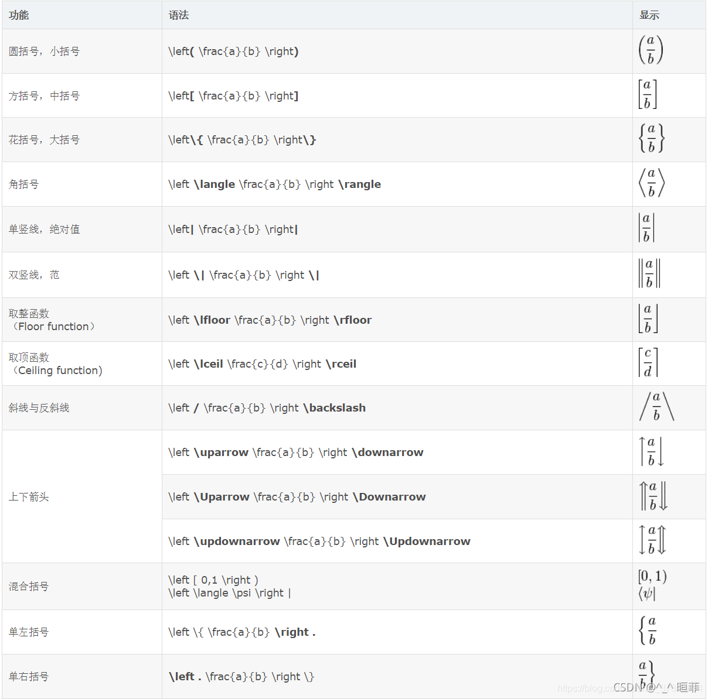

LaTex 笔记¶
| latex | 显示效果 | 备注 |
|---|---|---|
\theta |
\(\theta\) | |
\lambda |
\(\lambda\) | |
\frac{a}{b} |
\(\frac{a}{b}\) | 分数, 在矩阵中用\dfrac |
\arg \min_{\theta} |
\(\arg \min_{\theta}\) | |
\mathcal{L} |
\(\mathcal{L}\) | 花体字母 |
\nabla |
\(\nabla\) | |
\partial |
\(\partial\) | |
\Delta x |
\(\Delta x\) | |
J^{\dagger} |
\(J^{\dagger}\) | 伪逆 |
\infty |
\(\infty\) | |
\int |
\(\int\) | |
\iint |
\(\iint\) | |
\iiint |
\(\iiint\) | |
\iiiint |
\(\iiiint\) | |
\oint |
\(\oint\) | |
\times \cdot |
\(\times\) \(\cdot\) | 乘法 |
\lim |
\(\lim_{x \to \infty}\) | 极限 |
\neq \leq \geq |
\(\neq\) \(\leq\) \(\geq\) | 不等于, 小于等于， 大于等于 |
\in |
\(\in\) | 属于 |
\notin |
\(\notin\) | 不属于 |
\forall |
\(\forall\) | 所有 |
\exists |
\(\exists\) | 存在 |
\cap \cup |
\(\cap \quad \cup\) | 交 并 |
\because \therefore |
\(\because\) / \(\therefore\) | 因为/所以 |
\sum |
\(\sum\) | 求和 |
\prod |
\(\prod\) | 连乘 |
\stackrel{*}{\approx} |
\(\stackrel{*}{\approx}\) | 二元关系，将* 放在 不等于 之上 |
\bar{x} |
\(\bar{x}\) | |
\hat{x} |
\(\hat{x}\) | |
\vec{x} |
\(\vec{x}\) | |
\mathrm{d} x |
\(\mathrm{d} x\) | |
x^{'} x^{\prime} x^{\prime\prime} |
\(x^{'}\) \(x^{\prime}\) \(x^{\prime\prime}\) | 导数 |
\dot x \quad \ddot y |
\(\dot x \quad \ddot y\) | 几个点就是几个d |
\otimes |
\(\otimes\) | 克罗内克积 |
\oplus |
\(\oplus\) | 直和 |
\circ 或 \odot |
\(\circ 或 \odot\) | 哈达马积 |
\; \quad \qquad |
\(a \; b\), \(a\quad b\), \(a\qquad b\) | 三种不同长度的空格 |
\newline |
换行, obsidian 不可用？ |
|
\begin{align} xxx \end{align} |
公式对齐和换行，搭配 & \\ |
常用latex符号¶
大写字母，在小写字母 latex 形式的基础之上，首字母大写。
| 大写 | 小写 | 英文 |
|---|---|---|
| \(\Alpha\) | \(\alpha\) | alpha |
| \(\Beta\) | \(\beta\) | beta |
| \(\Gamma\) | \(\gamma\) | gamma |
| \(\Delta\) | \(\delta\) | delta |
| \(\Epsilon\) | \(\epsilon\) | epsilon |
| \(\Zeta\) | \(\zeta\) | zeta |
| \(\Eta\) | \(\eta\) | eta |
| \(\Theta\) | \(\theta\) | theta |
| \(\Iota\) | \(\iota\) | iota |
| \(\Kappa\) | \(\kappa\) | kappa |
| \(\Lambda\) | \(\lambda\) | lambda |
| \(\Mu\) | \(\mu\) | mu |
| \(\Nu\) | \(\nu\) | nu |
| \(\Xi\) | \(\xi\) | xi |
| \(\Omicron\) | \(\omicron\) | omicron |
| \(\Pi\) | \(\pi\) | pi |
| \(\Rho\) | \(\rho\) | rho |
| \(\Sigma\) | \(\sigma\) | sigma |
| \(\Tau\) | \(\tau\) | tau |
| \(\Upsilon\) | \(\upsilon\) | upsilon |
| \(\Phi\) | \(\phi\) | phi |
| \(\Chi\) | \(\chi\) | chi |
| \(\Psi\) | \(\psi\) | psi |
| \(\Omega\) | \(\omega\) | omega |
多行公式¶
obsidian还不支持公式编号
方程
\[
\begin{align}
a & = b + c \\
& = d + e
\end{align}
\]
% 对齐符号 & 可以理解为`\t` tab , 相当于占一格
\begin{align}
a & = b + c \\
& = d + e
\end{align}
分段函数
\[
|x| = \left\{
\begin{array}{l}
-x & \text{if } x < 0,\\
0 & \text{if } x = 0,\\
x & \text{if } x > 0.
\end{array} \right.
\]
|x| = \left\{
\begin{array}{l}
-x & \text{if } x < 0,\\
0 & \text{if } x = 0,\\
x & \text{if } x > 0.
\end{array} \right.
分段函数
\[
\begin{equation}
\lambda(C_L, C_R)=\left\{
\begin{aligned}
0, & , & d > IF, \\
\frac{IF - d}{d} ||C_L - C_R||_1 &,& d <= IF
\end{aligned}
\right.
\end{equation}
\]
\begin{equation}
\lambda(C_L, C_R)=\left\{
\begin{aligned}
0, & , & d > IF, \\
\frac{IF - d}{d} ||C_L - C_R||_1 &,& d <= IF
\end{aligned}
\right.
\end{equation}
方程组
\[
\begin{gather*}
x = X_{c_{1}} \\
y = X_{c_{2}} \\
z = X_{c_{3}} \\
\end{gather*}
\]
\begin{gather*}
x = X_{c_{1}} \\
y = X_{c_{2}} \\
z = X_{c_{3}} \\
\end{gather*}
latex学习笔记:多行公式_latex 多行公式_假装忙碌的人的博客-CSDN博客
PS: 这里的 & &应该是类似制表符\t，确定位置的作用
矩阵¶
矩阵括号¶

Tips
左右的括号可以不一样，比如 \left( xxxxx \right\}
方括号矩阵
\[
\left[
\begin{array}{cccc}
a & b & c & d\\
a & b & c & d\\
a & b & c & d\\
a & b & c & d\\
\end{array}
\right]
\]
\left[
\begin{array}{cccc}
a & b & c & d\\
a & b & c & d\\
a & b & c & d\\
a & b & c & d\\
\end{array}
\right]
圆括号矩阵
\[
\left(
\begin{array}{cccc}
a & b & c & d\\
a & b & c & d\\
a & b & c & d\\
a & b & c & d\\
\end{array}
\right)
\]
\left(
\begin{array}{cccc}
a & b & c & d\\
a & b & c & d\\
a & b & c & d\\
a & b & c & d\\
\end{array}
\right)
尖括号矩阵
\[
\left\{
\begin{array}{cccc}
a & b & c & d\\
a & b & c & d\\
a & b & c & d\\
a & b & c & d\\
\end{array}
\right\}
\]
\left\{
\begin{array}{cccc}
a & b & c & d\\
a & b & c & d\\
a & b & c & d\\
a & b & c & d\\
\end{array}
\right\}
分块矩阵¶
LaTeX中绘制分块矩阵（矩阵中绘制横竖线）_latex分块矩阵-CSDN博客
\begin{array}{cccc}
% ...
\end{array}
% 注意到 {cccc}， 这里的c表示 column
% cc|cc 即为在两列后添加竖线
% c:ccc 即为在一列后添加虚线
% 使用 \hline 绘制横实线
% 使用 \hdashline 绘制横虚线
% 上面可以组合使用
\[
\left[
\begin{array}{c:c|c:c}
a & b & c & d\\
a & b & c & d\\
a & b & c & d\\
a & b & c & d\\
\end{array}
\right]
\]
\left[
\begin{array}{c:c|c:c}
a & b & c & d\\
a & b & c & d\\
a & b & c & d\\
a & b & c & d\\
\end{array}
\right]
\[
\left[
\begin{array}{cccc}
a & b & c & d\\
\hline
a & b & c & d\\
a & b & c & d\\
\hdashline
a & b & c & d\\
\end{array}
\right]
\]
\left[
\begin{array}{cccc}
a & b & c & d\\
\hline
a & b & c & d\\
a & b & c & d\\
\hdashline
a & b & c & d\\
\end{array}
\right]
\[
\left[
\begin{array}{c:c|c:c}
a & b & c & d\\
\hline
a & b & c & d\\
\hdashline
a & b & c & d\\
a & b & c & d\\
\end{array}
\right]
\]
\left[
\begin{array}{c:c|c:c}
a & b & c & d\\
\hline
a & b & c & d\\
\hdashline
a & b & c & d\\
a & b & c & d\\
\end{array}
\right]
矩阵省略号写法
\[
\mathbf{X} = \left(
\begin{array} {cccc}
x_{11} & x_{12} & \ldots & x_{1n}\\
x_{21} & x_{22} & \ldots & x_{2n}\\
\vdots & \vdots & \ddots & \vdots\\
x_{n1} & x_{n2} & \ldots & x_{nn}\\
\end{array}
\right)
\]
\mathbf{X} = \left(
\begin{array} {cccc}
x_{11} & x_{12} & \ldots & x_{1n}\\
x_{21} & x_{22} & \ldots & x_{2n}\\
\vdots & \vdots & \ddots & \vdots\\
x_{n1} & x_{n2} & \ldots & x_{nn}\\
\end{array}
\right)
在矩阵中的元素里排版分式时，要用到\dfrac等命令
\[
\mathbf{H}=
\left[
\begin{array}{cc}
\dfrac{\partial^2 f}{\partial x^2} &
\dfrac{\partial^2 f}{\partial x \partial y} \\
\dfrac{\partial^2 f}{\partial x \partial y} &
\dfrac{\partial^2 f}{\partial y^2}
\end{array}
\right]
\]
\mathbf{H}=
\left[
\begin{array}
\dfrac{\partial^2 f}{\partial x^2} &
\dfrac{\partial^2 f} {\partial x \partial y} \\
\dfrac{\partial^2 f} {\partial x \partial y} &
\dfrac{\partial^2 f}{\partial y^2}
\end{array}
\right]
其它写法¶
\[
\begin{pmatrix}
1 & 2 \\ 3 & 4
\end{pmatrix}
\qquad
\begin{bmatrix}
1 & 2 \\ 3 & 4
\end{bmatrix}
\qquad
\begin{Bmatrix}
1 & 2 \\ 3 & 4
\end{Bmatrix}
\qquad
\begin{vmatrix}
1 & 2 \\ 3 & 4
\end{vmatrix}
\qquad
\begin{Vmatrix}
1 & 2 \\ 3 & 4
\end{Vmatrix}
\]
\begin{pmatrix}
1 & 2 \\ 3 & 4
\end{pmatrix}
\qquad
\begin{bmatrix}
1 & 2 \\ 3 & 4
\end{bmatrix}
\qquad
\begin{Bmatrix}
1 & 2 \\ 3 & 4
\end{Bmatrix}
\qquad
\begin{vmatrix}
1 & 2 \\ 3 & 4
\end{vmatrix}
\qquad
\begin{Vmatrix}
1 & 2 \\ 3 & 4
\end{Vmatrix}
Notes
这种写法要记太多，不如使用 array 统一
数学字母字体¶
手写体
\[ \mathcal{R} \quad \mathfrak{R} \quad \mathbb{R} \]
\mathcal{R} \quad \mathfrak{R} \quad \mathbb{R}
手写体例子
\[
\mathcal{L}
= -\frac{1}{4}F_{\mu
u}F^{\mu
u}
\]
\mathcal{L} = -\frac{1}{4}F_{\mu\nu}F^{\mu\nu}
李代数
\(\mathfrak{su}(2)\)
\(\mathfrak{so}(3)\)
\mathfrak{su}(2)
\mathfrak{so}(3)
箭头¶

| Latex | 显示效果 |
|---|---|
\leftarrow \rightarrow \uparrow \downarrow |
\(\leftarrow\) \(\rightarrow\) \(\uparrow\) \(\downarrow\) |
\Leftarrow \Rightarrow \Uparrow \Downarrow |
\(\Leftarrow\) \(\Rightarrow\) \(\Uparrow\) \(\Downarrow\) |
\nleftarrow \nrightarrow \not\uparrow \not\downarrow |
\(\nleftarrow\) \(\nrightarrow\) \(\not\uparrow\) \(\not\downarrow\) |
\to |
\(\to\) |
\gets |
\(\gets\) |
\iff |
\(\iff\) |
\nearrow \nwarrow \searrow \swarrow |
\(\nearrow\) \(\nwarrow\) \(\searrow\) \(\swarrow\) |